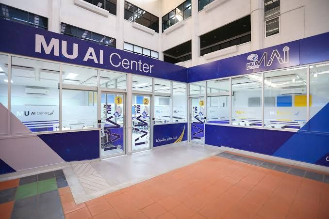
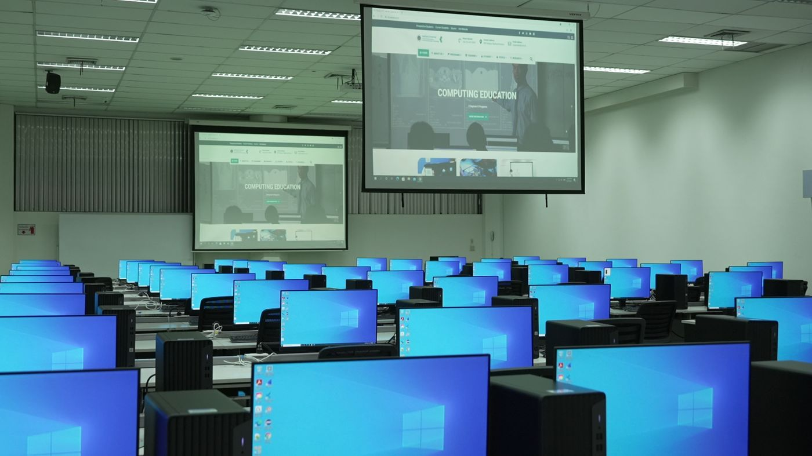

An international ICT degree, right next door
The B.Sc. in Information and Communication Technology is taught in English at Mahidol University in Salaya, Thailand, about 1.5 to 2 hours by air from Ho Chi Minh City and Hanoi.
Learn computing by building things
The programme builds strong computing foundations in the first two years, then lets you specialise and finish with a capstone project. Teaching is project-based and active, and all instruction is in English.
How the 120+ credits are split
| General education | 30 credits, including 12 of language courses |
|---|---|
| Specialised education | 84 credits: core 12, required 48, specialisation electives 18, capstone 6 |
| Free electives | 6 credits |
What you need to graduate
- A cumulative GPA of at least 2.00
- English: TOEFL iBT 70, IELTS 5.5 or TOEIC 620 (or another accepted standard)
- Grade C or better in Fundamentals of Programming, Public Speaking and Presentation, and Academic Writing
- Honours at GPA 3.50 (first class) or 3.25 (second class)
Your four years
Year 1
Programming, discrete structures, calculus and linear algebra, probability and statistics, digital systems, entrepreneurship and technical English.
Year 2
Data structures and algorithms, databases, computer networks, operating systems, web development, data science and multimedia.
Year 3
Computer and communication security, ethics, business communication and academic writing, plus your first specialisation electives.
Year 4
A two-semester capstone project and the rest of your specialisation electives.

Choose from eight specialisations
You take at least 18 credits in the areas that match your career goals. Take 15 credits or more in an area to earn it as a minor.
Artificial Intelligence
Machine learning and intelligent systems applied to practical problems.
Machine Learning, Natural Language Processing, Computer Vision, Deep LearningNetwork and Security
Networks, cloud, IoT and cybersecurity.
Cloud Computing, Embedded Systems and IoT, Advanced Cybersecurity, IoT Security and PrivacySoftware Engineering
The full software lifecycle, from requirements to quality assurance, using Agile and Scrum.
Practical Software Engineering, Requirements, Design and Architecture, Process and QualityComputer Science
Theory and algorithms for solving real-world problems.
Algorithms Design and Analysis, Compiler Design, Theory of ComputationDatabase Systems
Database design, big data, business intelligence and administration.
Database Design, Advanced Database Systems, Big Data Management, Text MiningHealth Information Technology
Information systems for healthcare organisations, with privacy and security.
Healthcare Systems, IT for Healthcare Services, Health Information StandardsInteractive Multimedia Technology
Interactive systems for art, education, entertainment, medicine and science.
Computer Graphics, Digital Storytelling, Virtual Reality, Game DevelopmentInformation Systems Management
Using IT to improve how organisations run.
Business Process Management, Experience Design, Data Warehousing and BIWhere graduates work
Build and design
Software engineer, web developer, system analyst, UX designer, game developer, multimedia developer.
Protect, test and run
Software tester, cybersecurity analyst, database administrator, network and server administrator.
Analyse, teach, start up
Data scientist, data engineer, computer science educator, or your own ICT company.
Overseas internships and exchange
In the 2024 academic year, 58 students from this programme (and 5 from a sister programme) joined overseas internships, with grants totalling 6,616,400 THB. Hosts included the University of Bremen in Germany, Macquarie University in Australia, Universiti Teknologi PETRONAS in Malaysia, National Central University in Taiwan, and nine Japanese universities such as Tohoku, Osaka, Kyushu, NAIST and JAIST. Places, funding and selection change each year.
Tuition and scholarships
International students pay a flat rate per semester. The figures below are for students with ID 66xxxxx onwards, which includes the 2027 intake.
| Study period | Tuition |
|---|---|
| One regular semester | 90,000 THB |
| One academic year (2 semesters) | 180,000 THB |
| Four years (8 semesters) | 720,000 THB |
Yearly and four-year totals are calculated from the published semester rate. Summer semester (June to July) is 25,000 THB and runs only when needed. Semesters beyond the standard length, or with fewer than 9 credits, are charged 25,000 THB. Living costs, visa, insurance and travel are extra. Fees may change.
Scholarships
- Four-year partial scholarships for students enrolled from 2020 onwards
- One-year partial scholarships for academic performance and student activities, plus a service support fund
- Overseas internship grants from partner universities and Mahidol University (see above)
Scholarships are partial and awarded by selection, so they are not guaranteed. The amount covered, number of awards and renewal conditions are set in the faculty’s scholarship announcement each year. Email the admissions office below for the current terms.
How to apply from Vietnam
Vietnamese applicants use the International Direct Admissions route for the 2027 intake. Everything is submitted online, and the faculty does not need original documents.
| Round | Apply between | Interview exam | Status |
|---|---|---|---|
| Round 1 | 1 to 30 September 2026 | 11 November 2026 | Closed |
| Round 2 | 1 October to 31 December 2026 | February 2027 | Open now |
| Round 3 | 1 January to 31 March 2027 | April 2027 | Opens soon |
| Round 4 | 1 April to 15 May 2027 | May 2027 | Opens soon |
Applicants are told whether they are invited to interview about a month after each round closes. The ICT preparatory programme runs June to July 2027 and the first semester starts in August 2027.
Steps
- Check you qualifyUse the requirements on this page.
- Take the tests you needAn English test and a maths test, both taken within two years before you apply.
- Apply online and pay 600 THBUpload your documents. The fee is not refundable.
- Attend the interview examIf you are invited after the document review.
- Receive your result and enrolThen join the preparatory programme.
Who can apply
- Completed or currently in Grade 12 or the equivalent of upper secondary school (Mathayom 6, US Grade 12, Cambridge AS/A-Level in three subjects at grade C or above, International Baccalaureate, or GED with 145 in each subject)
- High-school GPA of at least 2.50 on a 4.0 scale, or equivalent (for example, C+)
- An accepted English test score and an accepted maths test score
Applicants from the UK, US, Australia, Canada, New Zealand and Singapore are exempt from the English test. Vietnamese certificates are not listed by name, so the faculty decides equivalency. Send your transcript to the admissions office before you pay the fee.
Accepted test scores
English (any one)
- IELTS 5.0 or higher, each part at least 5.0
- TOEFL iBT 60 or higher, each part at least 15
- TOEFL ITP 500 or higher, each part at least 49
- TOEIC 600 or higher
- Duolingo English Test 80 or higher, each part at least 75
- SAT Evidence-Based Reading and Writing 400 or higher
- Also accepted: AP, IB, Cambridge IGCSE, Gaokao English 100, AST English 170
Maths (any one)
- SAT Math 600 or higher
- ACT Math 25 or higher
- AP Calculus AB or BC, 4 or higher
- IB Math or Computer Science: HL 4 or higher, SL 5 or higher
- Cambridge IGCSE Mathematics (0580) Extended, grade B or above
- Also accepted: Gaokao Math 70, AST Mathematics 170
Documents to upload (PDF unless noted)
- High-school diploma or equivalent, certified by the Ministry of Education
- Transcript or record of academic performance
- First page of your valid passport
- One 1-inch photo from the last 6 months (JPG, under 150 KB)
- Statement of purpose, up to 2 A4 pages
- Maths test score
- English test score
- Résumé, achievements and certificates, if you have them
Sign each document yourself. Upload everything through the online system only.
Life in Thailand
The Faculty of ICT is in the ICT Building on Mahidol University’s Salaya campus in Nakhon Pathom, west of Bangkok. The faculty has welcomed school groups from Vietnam to the campus.

Plan these costs beyond tuition
- Accommodation: on or near the Salaya campus
- Meals and local transport
- Visa and health insurance: prepare your documents after you receive an offer
- Flights home: about 1.5 to 2 hours from Ho Chi Minh City or Hanoi
Typical monthly amounts for these costs are confirmed by the admissions office when you apply.
Questions families ask
Can I apply directly from Vietnam?
Yes. The International Direct Admissions rounds are fully online, with documents uploaded through the application system and no original documents sent to the faculty.
Is my Vietnamese high-school certificate accepted?
The published list names Thai, US, Cambridge, IB and GED qualifications. Other overseas qualifications are assessed by the faculty, so email your transcript to the admissions office and ask before paying the fee.
What is the total tuition for four years?
720,000 THB at the current regular-semester rate of 90,000 THB. This does not include living costs, visa, insurance or travel.
Are scholarships guaranteed?
No. The faculty offers partial scholarships through selection, and the conditions for each year are set in its announcement.
When does study begin?
An ICT preparatory programme runs in June and July 2027, and the first semester starts in August 2027. The first semester runs August to December and the second January to May.
Talk to the admissions team
Ask about scholarship terms, Vietnamese certificate equivalency or anything else before you apply.
- Admissions email: ictadmission@mahidol.ac.th
- General email: ict@mahidol.ac.th
- Phone: +66 2 441 0909
- LINE Official Account: @ictmahidol
- Facebook: ict.mahidol.university
- Address: ICT Building, Mahidol University, 999 Phuttamonthon 4 Road, Salaya, Nakhon Pathom 73170, Thailand